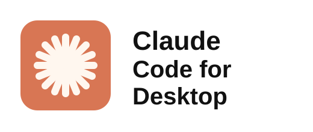
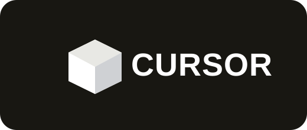
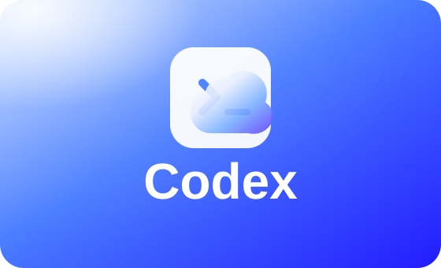
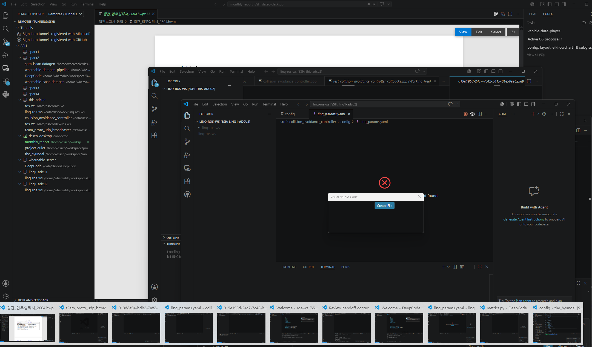
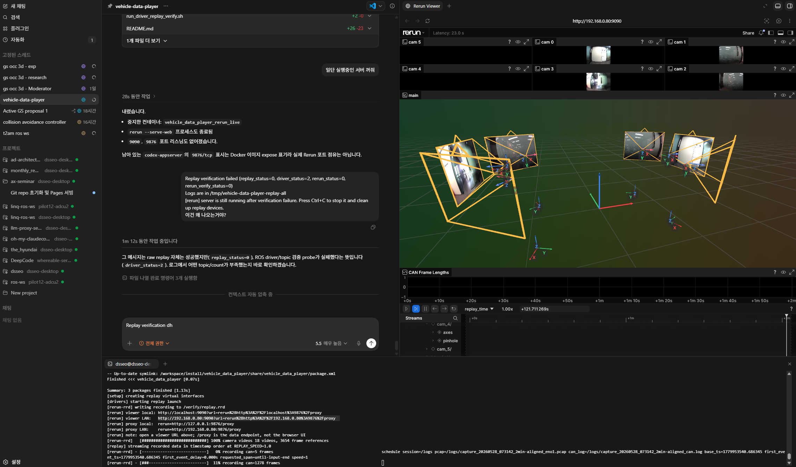
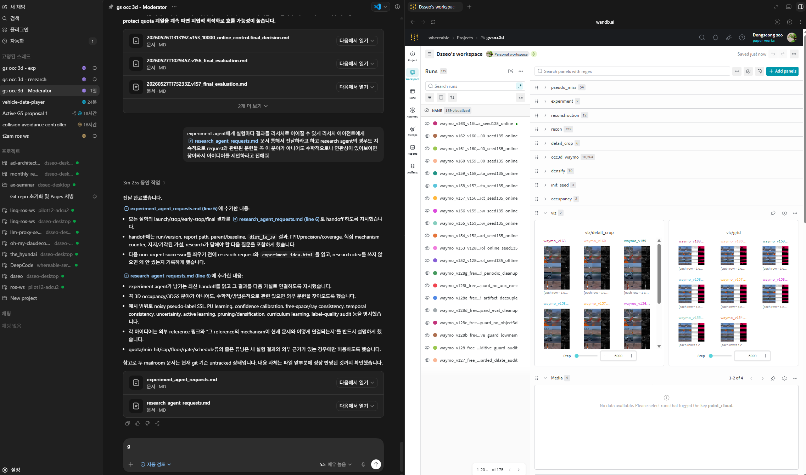
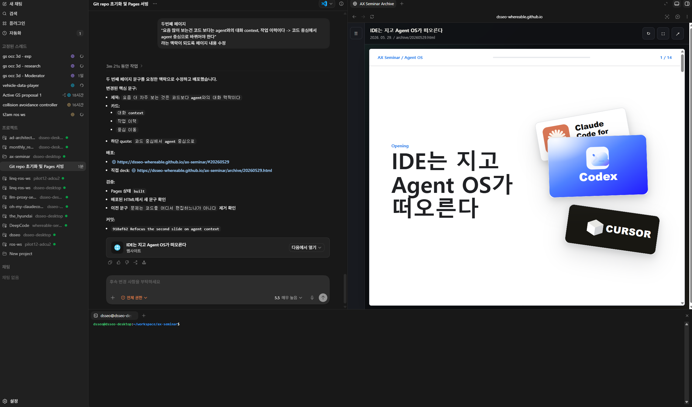
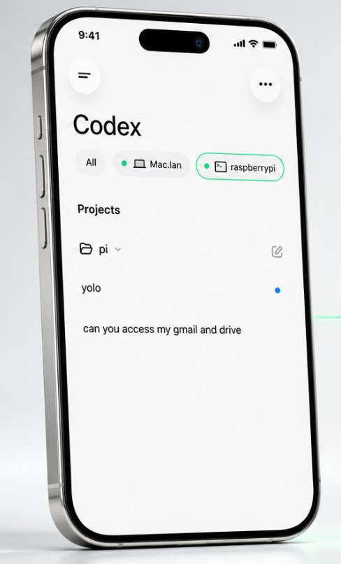
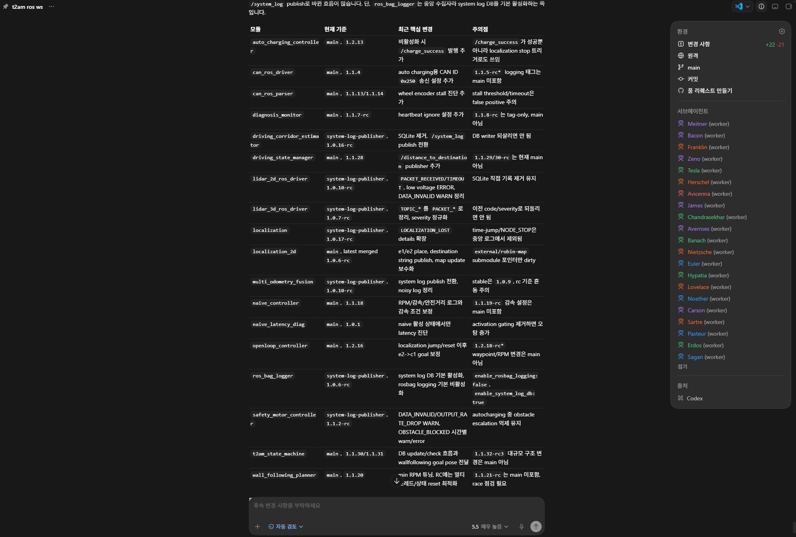
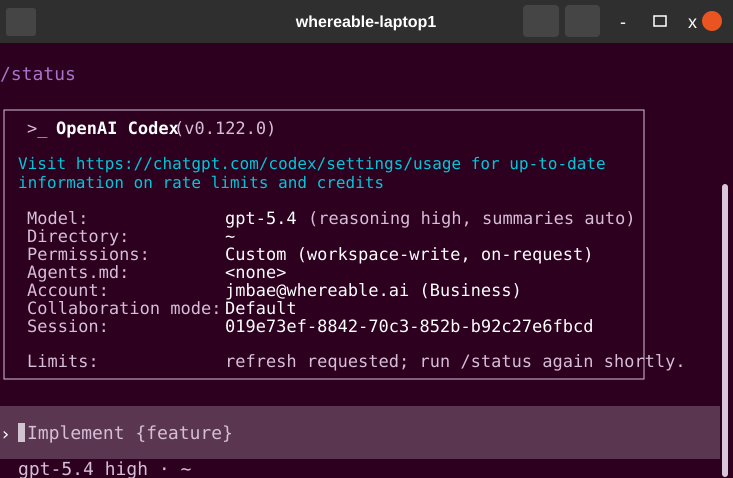

IDE는 지고
Agent OS가 떠오른다



요즘 더 자주 보는 것은 코드보다 agent와의 대화 맥락이다
무엇을 시켰고, 어떤 답을 받았고, 어디서 방향이 바뀌었는가?
어떤 파일을 고쳤는지보다 어떤 시도와 검증이 지나갔는지가 중요해진다.
코드를 직접 붙잡는 방식에서 agent의 상태와 판단을 관리하는 방식으로 바뀐다.
할 수 있는 게 많아진 만큼 창은 많아졌고 병목은 사용자에게 있다
원격 서버, 문서, IDE, 터미널, agent chat까지 모두 열 수 있게 됐지만 무엇이 어디서 진행 중인지 다시 찾고 연결하는 일은 여전히 사람이 합니다.
vscode-window-chaos

Agent OS는 모든 작업 표면을 한 곳에 모아준다
대화, 브라우저, 터미널, Git, 파일 상태를 한 화면에서 볼 수 있으면 사용자는 여러 창을 찾아 헤매지 않고 필요한 맥락으로 빠르게 전환할 수 있습니다.
session-browser-terminal

Agent OS는 모든 작업 표면을 한 곳에 모아준다
대화, 브라우저, 터미널, Git, 파일 상태를 한 화면에서 볼 수 있으면 사용자는 여러 창을 찾아 헤매지 않고 필요한 맥락으로 빠르게 전환할 수 있습니다.
session-research-browser

Agent OS는 모든 작업 표면을 한 곳에 모아준다
대화, 브라우저, 터미널, Git, 파일 상태를 한 화면에서 볼 수 있으면 사용자는 여러 창을 찾아 헤매지 않고 필요한 맥락으로 빠르게 전환할 수 있습니다.
git-files-pages

차이는 툴이 아니라 컨텍스트 스위칭 비용을 줄이는 거다
앞의 예시는 “agent가 알아서 한다”는 이야기가 아닙니다. 사용자가 봐야 할 작업 표면을 한 곳에 모아 상태 복원 비용을 줄이는 이야기입니다.
파일, 터미널, 브라우저, Git 상태가 창마다 흩어지고 사용자가 이어 붙입니다.
대화, 실행 화면, 변경 이력, 검증 결과가 같은 작업 표면에 모입니다.
창을 찾는 사람이 아니라 맥락을 보고 다음 결정을 내리는 사람이 됩니다.
데스크탑뿐 아니라 폰 하나로도 서버를 컨트롤한다
Mac, Raspberry Pi, GPU 서버, 회사 서버처럼 접속 가능한 모든 머신이 같은 작업 표면에 들어오면 장소와 기기에 묶이지 않고 상태 확인과 다음 지시가 가능합니다.
책상 앞 데스크탑이 아니어도, 폰 하나로 서버 작업을 이어갈 수 있습니다.
remote-control-phone

subagent도 직접 보고 직접 관리한다
기존 Codex 사용 방식에서는 여러 subagent를 띄운 뒤 각 세션이 어디까지 왔는지, 누구에게 말을 걸어야 하는지 관리하기가 어려웠습니다. 이제는 리스트에서 세션을 보고 필요한 worker를 열어 직접 대화하고 관리할 수 있습니다.
subagent-session-list

믿을 만한 작업 기록이 쌓이면 위임이 가능해진다
작업 지시, 중간 판단, 실패한 시도, 검증 결과가 세션에 남으면 사용자는 모든 세부 맥락을 직접 들고 있지 않아도 orchestrator를 통해 subagent에게 작업을 위임할 수 있습니다.
codex-subagent-orchestration
t2am ros-ws는 18개 모듈을 subagent에게 맡긴다
사용자가 ROS workspace의 18개 모듈을 모두 직접 따라가는 대신, 각 모듈 관리는 subagent에게 맡깁니다. 사용자는 orchestrator를 통해 subagent들의 상태를 보고 필요한 worker에게 질문하거나 다음 지시를 내립니다.
t2am-ros-ws-subagents
Codex Desktop이 기본이어도 Claude Code / Cursor가 필요할 때가 있다
Agent OS의 핵심은 특정 앱 하나로 통일하는 것이 아닙니다. 작업 환경과 권한, 편집 방식에 따라 가장 적절한 agent 표면을 고르는 것입니다.
프로젝트별 workspace, 세션 목록, 브라우저와 git 상태를 한 화면에서 관리할 때 기본 작업 표면이 됩니다.
서버 터미널에 바로 붙거나, 특정 환경에서 짧고 빠르게 agent 작업을 실행해야 할 때 유용합니다.
제한된 편집, 빠른 코드 탐색, 토큰을 남기기 어려운 임시 환경에서는 여전히 실용적인 선택지입니다.
토큰은 중요한 자산이고, 누군가 다 써버릴 수도 있다
agent 토큰에는 비용, rate limit, 작업 권한이 같이 붙어 있습니다. 공용 PC나 임시 장비에 로그인 상태를 남기면 누군가 내 한도와 권한을 그대로 소모할 수 있습니다.
codex-token-status

오늘의 핵심
여러 프로젝트와 세션이 동시에 돌 때 IDE 중심 방식은 피로해집니다.
Agent OS는 workspace, remote control, orchestration을 하나의 작업 표면으로 묶습니다.
믿을 만한 기록이 쌓인 프로젝트는 agent에게 인수인계할 수 있습니다.
질문은 “어떤 IDE를 쓸까?”가 아니다
이 질문이 앞으로 개발, 연구, 운영 환경에서 더 중요해질 것입니다.